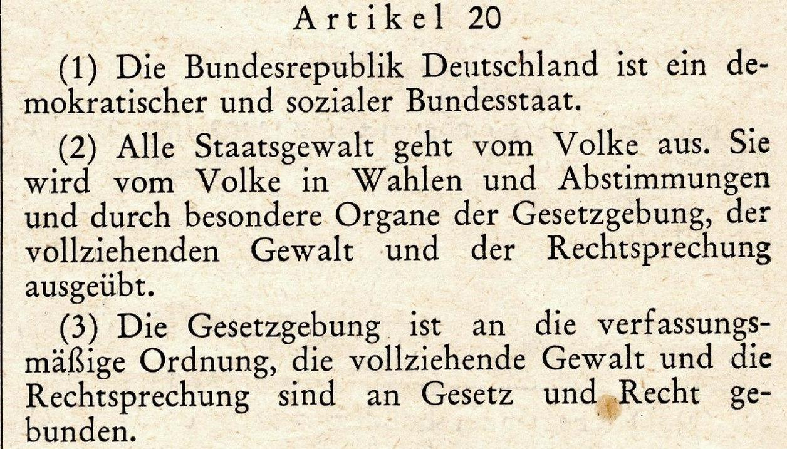
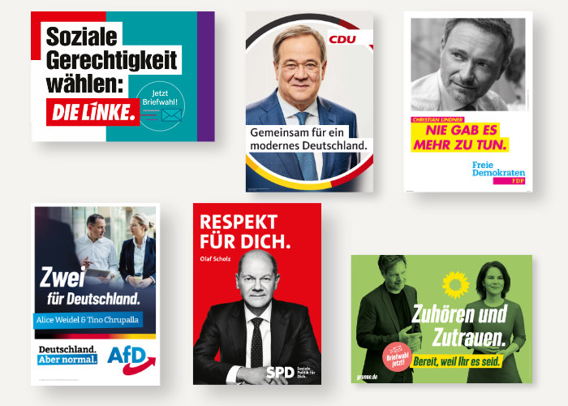
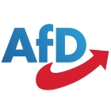
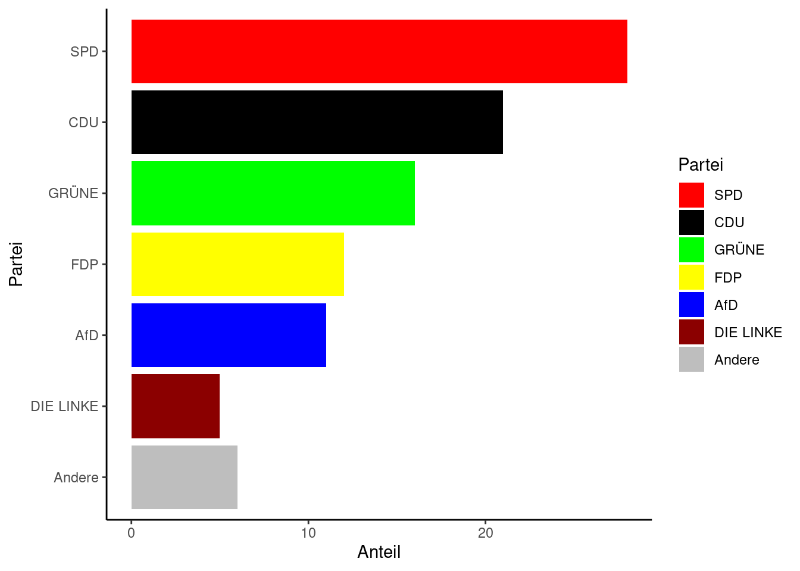

12 Bundestagswahl 2021
| Themen | Politisches System Deutschlands, Parteien, Bundestagswahl 2021 |
| Lernziele | Sie sind in der Lage, das politische System Deutschlands grob zu beschreiben. Sie kennen die deutsche Parteienlandschaft und sind in der Lage, Ihren eigenen politischen Standort darin zu bestimmen und eine Meinung zu äußern. |
Was bedeutet dieser Satz? Beraten Sie in der Gruppe. Überlegen Sie dann, ob Sie zustimmen oder nicht zustimmen, und begründen Sie Ihre Meinung.
Alle Staatsgewalt geht vom Volke aus.
Wo steht dieser Satz?
 (Grundgesetz für die Bundesrepublik Deutschland. Abbildung: Erste Ausgabe des Bundesgesetzblatts vom 23. Mai 1949)Ein wichtiger Begriff im Artikel 20 ist die Gewaltenteilung. Bearbeiten Sie das Arbeitsblatt, um mehr darüber zu erfahren.
Pause
Ein zweites wichtiges Wort im Artikel 20 ist Wahlen. Die Bürgerinnen und Bürger Deutschlands wählen ihre politischen Vertreter, z.B. den Bundestag. Sie müssen sich dabei für eine von vielen Parteien entscheiden. Die Parteien vertreten unterschiedliche Ansichten und Positionen und machen vor der Wahl Werbung für sich, z.B. mit Plakaten. Analysieren Sie ein Plakat in der Gruppe. Was ist auf dem Plakat zu sehen? Wie wirkt das Plakat auf Sie? Was ist vermutlich die Position dieser Partei? Versuchen Sie auch, passende Schlüsselwörter zuzuordnen.
mobil – Respekt – konservativ – Freiheit – digital – Bürgerrechte – wirtschaftsliberal – Familie – modern – Bildung – christlich – Sicherheit – sozial – ökologisch – deutsch – Klimaschutz – Wachstum – Rechtsstaat – europäisch – Klimaschutz – Einwanderung – Marktwirtschaft – gleich – Gerechtigkeit – Gesundheit – Mieten und Löhne – Frieden – Demokratie

Vergleichen Sie dann Ihre Eregbnisse mit der Selbstbeschreibung der Partei. Stimmen Sie überein? Korrigieren Sie Ihre Analyse, wenn nötig. Stellen Sie Ihre Partei im Plenum vor.
Parteien
| Christlich Demokratische Union Deutschlands Wir stehen dafür, nach der Krise durchzustarten – mit wirtschaftlicher Dynamik, die Klimaschutz, Wachstum und soziale Sicherheit zusammendenkt. Deutschland als Aufsteigerland – beste Chancen unabhängig von Herkunft und Wohnort. Ein starker Rechtsstaat für unsere Sicherheit und Freiheit. | |
| Sozialdemokratische Partei Deutschlands Die SPD kämpft für ein starkes, soziales Land für uns alle! Das gelingt vor allem durch Respekt voreinander und ein „Füreinander“ in ganz Europa. Wir wollen ein klimaneutrales Land, in dem die Digitalisierung und moderne Mobilität weltspitze sind! | |
|  | Alternative für Deutschland Die AfD steht für pragmatische Lösungen auf die Fragen unserer Zeit sowie für einen ausgeglichenen Ansatz, der Freiheit und Sicherheit versöhnt. Migration und Integration, Stärkung der Bürgerrechte und Förderung von Familien – das sind für uns die wichtigsten Themen für die Bundestagswahl 2021. |
| Freie Demokratische Partei Wir sind die Partei, die auf die persönliche Freiheit jedes Menschen, den Schutz von Bürgerrechten und die Kräfte der Sozialen Marktwirtschaft setzt. Wir wollen Aufstieg durch Bildung ermöglichen, Digitalisierung voranbringen und für intakte ökologische und ökonomische Lebensgrundlagen sorgen. | |
| DIE LINKE Wir wollen soziale Gerechtigkeit – für alle! Deswegen legen wir uns mit Reichen & Lobbyisten an. Als einzige Partei nehmen wir keine Konzern-Spenden. Vermögen besteuern für Investitionen in Gesundheit, Bildung & Klimagerechtigkeit; Mieten deckeln & Löhne erhöhen; Aufrüstung & Waffenexporte stoppen. | |
 |
BÜNDNIS 90/DIE GRÜNEN Wir stehen für den Aufbruch hin zu einer klimagerechten Gesellschaft. 1. Pariser Klimaziele umsetzen & ökologische Transformation voranbringen, 2. Verringerung der Ungleichheit, 3. Freiheit & Demokratie in starkem Europa |
Welche Partei wählen Sie und wieso? Diskutieren Sie zunächst in der Gruppe. Stimmen Sie dann geheim, gleich und frei ab. Diskutieren Sie das Ergebnis. Vergleichen Sie das Ergebnis mit dem Ergebnis der Bundestagswahl 2021.
Ergebnis Bundestagswahl 2021

Hausaufgabe
Neue Parteien werden oft gegründet, um ein bestimmtes Problem zu lösen oder ein bestimmtes Anliegen durchzusetzen. Die AfD z.B. ist vor allem gegen Einwanderung aus anderen Kulturkreisen, die Grünen waren anfangs vor allem eine Umwelt- und Naturschutzpartei, die sich gegen Atomkraft eingesetzt hat. Überlegen Sie, für welches gesellschaftliche Anliegen Sie vielleicht eine Partei gründen könnten.
Lesen Sie in Tatsachen über Deutschland die Seiten 24-27 über die aktuelle Bundesregierung und Seite 34 über politische Teilhabe in Deutschland.
Alternative
Jetzt sind Sie dran: Stimmen Sie im Wahlomat über die wichtigsten Themen der Bundestagswahl 2021 ab! Vergleichen Sie anschließend Ihre Ergebnisse mit den Ergebnissen der Bundestagswahl. (material/wahlomat/index.html)